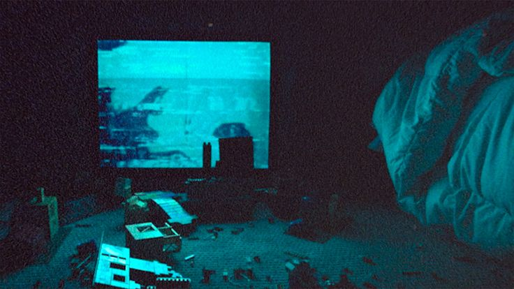

Com pouca trama ou diálogos claros, Skinamarink usa o vazio e a ausência como seus principais elementos de terror. A ideia de um ambiente familiar transformado em algo alienígena e desorientador remete diretamente à experiência de jogos de terror como Silent Hill ou Layers of Fear, onde o mundo parece distorcer-se sem explicação lógica, deixando o espectador ou jogador em uma constante sensação de ameaça invisível. O filme não busca explicar, mas faz o público se perder na confusão do desconhecido.
O conceito de analog horror em "Skinamarink" é evidente, não só pela maneira em que a imagem é filmada, mas também pela forma como o som e as distorções visuais se tornam ferramentas poderosas para construir o clima de terror. Os momentos de escuridão quase total, onde se ouve apenas o som de algo se movendo na casa, fazem com que a experiência se assemelhe a um vídeo antigo corrompido, como se você estivesse assistindo a algo que não deveria ser visto – algo perdido no tempo. A falta de uma explicação racional para os eventos adiciona uma camada de desespero, como um jogo de terror onde cada movimento parece uma ilusão.
O filme não oferece respostas claras e, por isso, atrai aqueles que apreciam a ideia de um medo mais psicológico, onde o horror é mais sobre a sensação do que sobre o que está sendo mostrado. Com seu estilo de filmagem abrasivo e desconcertante, Skinamarink ressoa com fãs de jogos e filmes de analog horror, como The Mandela Catalogue, que exploram a sensação de estar preso em uma realidade distorcida e incompreensível. Para quem busca uma experiência imersiva e inquietante, este filme é uma viagem única e perturbadora.
